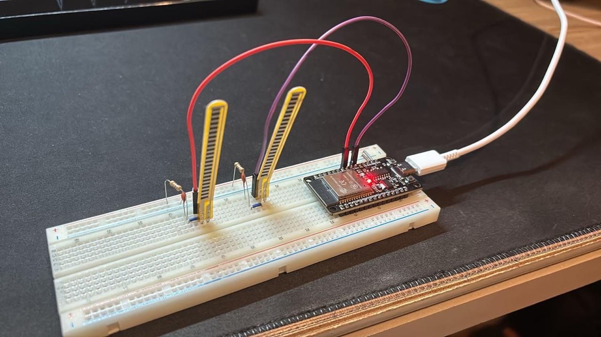
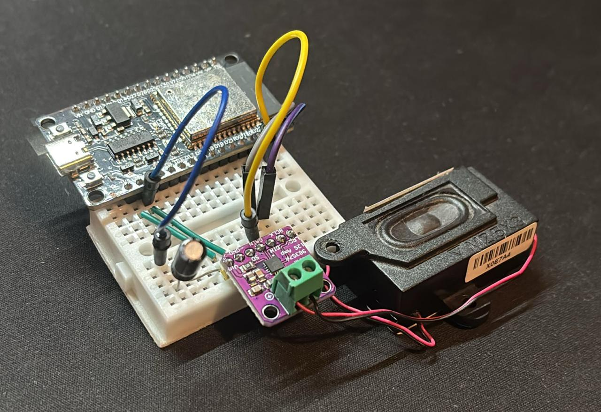

Visão Geral do Sistema
O SignTalk é construído sob uma arquitetura distribuída e sem fio, utilizando processamento Edge Computing. O sistema foi dividido em duas unidades principais para garantir a ergonomia da luva: um Nó Transmissor (a luva propriamente dita) e uma Base Receptora (onde ocorre o processamento neural e a saída de som).

Componentes de Hardware
Microcontroladores
Processadores poderosos de baixo consumo que executam o código C/C++ do sistema.

- ESP32-S3: "O Cérebro" localizado na base receptora, projetado para tarefas complexas de IA e decodificação de áudio digital.
- ESP32-C3: Minúsculo nó coletor que fica na luva. Escolhido pelo seu tamanho reduzido e integração com a antena sem fio.
Sensores
A "Mão Virtual" — responsáveis por digitalizar a intenção mecânica do usuário em sinais elétricos.

- 10x Sensores Flex A12E-10X: Fixados nas articulações para capturar o nível de curvatura dos dedos (via conversores ADC e resistores Pull-down 10kΩ).
- MPU-6050 (GY-521): Acelerômetro e Giroscópio I2C para orientar a inclinação tridimensional do pulso do usuário.
Interface de Saída e Energia
Os hardwares responsáveis por tornar a tradução inteligível para as demais pessoas.

- MAX98357A (Módulo I2S): Amplificador que recebe áudio puramente digital do ESP32 para evitar ruídos e chiados analógicos.
- Alto-falante (PK230007O00): Reprodução clara do *Text-to-Speech*.
- Display LCD 16x2 I2C: Com backlight azul, responsável por mostrar na tela a letra ou palavra traduzida.
- Baterias Lítio 3.7V: Garantem a portabilidade total do sistema (vestível).
Stack de Software e Ferramentas
Edge Impulse & TinyML
Plataforma líder em *Machine Learning* para sistemas embarcados.
- Treinamento: Usamos o Edge Impulse para coletar amostras rotuladas (Gestos), extrair *features* em janelas de tempo e treinar uma Rede Neural Profunda (Classificação Keras).
- Deploy: O modelo treinado é compilado nativamente para uma biblioteca C++ leve o suficiente para rodar offline direto no processador do ESP32-S3.
Automação com Python e CLI
Scripts criados sob medida pela equipe para otimizar a criação do *Dataset* de treinamento.
- Coleta Via Script: O arquivo
coleta_sign_talk.pyfoi desenvolvido para ler a porta Serial, automatizar pausas de respiro para o usuário e gerar CSVs das luvas de forma eficiente. - Edge Impulse CLI: Uso de terminal (
edge-impulse-uploader) para fazer envios em lote dos arquivos CSV rotulados direto para a nuvem de treinamento.